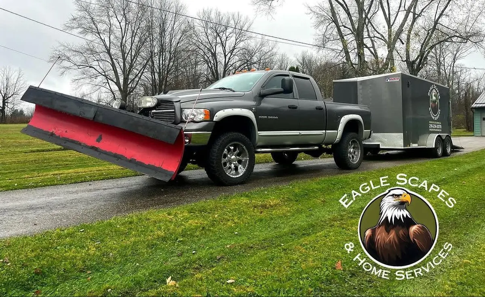

How the two structures actually work in Geauga and Portage County, what trigger depth means, and why October is the deadline that matters.

Every fall, homeowners across Geauga and Portage County have to answer the same question: pay per push, or lock in a seasonal contract? Get it wrong and you either overpay in a light winter or get left uncovered in a heavy one.
Here is how the two structures actually work, which one fits which property, and why the date you sign matters as much as the price.
Per-push means exactly what it sounds like. Every time snow reaches the trigger depth — typically two inches — we plow, and you are billed for that visit.
That last point is the one people underestimate. When eighteen inches falls overnight, every plow operator in the county runs their contracted routes first. That is not a scam — it is the obligation they signed. Per-push customers get fit in around it.
A seasonal contract is a flat rate for the whole winter, typically November through March, covering unlimited pushes at the trigger depth.
The honest way to think about it: per-push is a bet on the weather, seasonal is insurance against it. Neither is universally smarter. It depends on whether an unplowed driveway on a Tuesday morning is an inconvenience or a genuine problem.
Our service area is not uniform, and this is where local knowledge changes the answer.
Geauga County towns — Bainbridge, South Russell, Auburn, Chagrin Falls — sit in a lake-effect belt that regularly picks up substantially more snow than Portage County. Bands park over Geauga and dump for hours. Properties there see more push events in a typical winter, which tilts the math toward seasonal contracts.
Aurora and Mantua, in Portage County, generally see less total accumulation. But Mantua's open farmland means drifting is severe — a two-inch storm with wind can close a rural driveway more effectively than a six-inch calm one. Drifting is a real factor that raw snowfall totals hide.
Trigger depth is the accumulation that automatically dispatches a plow. Two inches is the regional standard. Some companies quote attractive rates on a three-inch or four-inch trigger, which means a two-and-a-half-inch storm leaves you unplowed and technically nothing was breached.
Ask directly: what is the trigger, is it measured at my property or at a regional station, and what happens on a storm that sits just under it? A contract without a clearly stated trigger is not a contract, it is a hope.
The walkway question surprises people every year. Many residential plow contracts cover the driveway only. If you need the front walk and steps cleared, confirm it in writing.
Early October. Occasionally late September.
Snow routes are built geographically, and once a route is full it is full — a plow operator cannot add a driveway three towns off the run without breaking service times for everyone already on it. Rural properties with long drives take longer per push, so those slots fill first.
Homeowners who wait for the first forecast in November are calling companies whose routes closed six weeks earlier. That is why the second week of November is the worst possible time to shop for snow removal in this area.
If you are heading somewhere warm for the winter, pair the contract with home watch so somebody is actually confirming the driveway got cleared and the furnace is still running.
In a genuinely mild winter you will pay more than per-push would have cost. What you bought was priority position and a predictable number. If being plowed first every storm matters to you, that premium is the product. If it does not, per-push is a legitimate choice.
Two inches is our standard, measured at your property. Below that we are not dispatching for a residential driveway, though ice control can be handled separately when conditions call for it. We put the trigger in writing so there is no ambiguity mid-storm.
Yes — lots, drives, and access areas across Geauga and Portage County. Commercial work runs on separate timing since most properties need to be clear before opening, and it is contracted separately from residential routes.
Typically by mid-to-late October. Rural properties in Auburn, Bainbridge, and Mantua fill earliest because long driveways take more time per push, which limits how many we can fit in a route. Signing in September or the first week of October is the safe play.
Get a per-push or seasonal quote for your property in Aurora, Chagrin Falls, Bainbridge, South Russell, Auburn, or Mantua before the route closes.
Get My Snow Quote